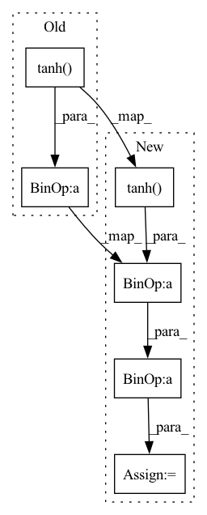

Pattern ID :2495
Before Change
def forward(self, state, action=None):
a = t.relu(self.fc1(state))
a = t.relu(self.fc2(a))
mu = t.tanh( self.mu_head(a)) * self.action_range
sigma = softplus(self.sigma_head(a))
dist = Normal(mu, sigma)
act = (actionAfter Change
// the suggested way to confine your actions within a valid range
// is not clamping, but remapping the distribution
act_log_prob = dist.log_prob(act)
act_tanh = t.tanh( act)
act = act_tanh * self.action_range
// the distribution remapping process used in the original essay.
act_log_prob -= t.log(self.action_range *
(1 - act_tanh.pow(2)) +
1e-6)
act_log_prob = act_log_prob.sum(1, keepdim=True)
// If your distribution is different from "Normal" then you may either:In pattern: SUPERPATTERN
Frequency: 3
Non-data size: 6
Instances Fragment ID: 10476236
Project Name: iffix/machin
Commit Name: 97281e65077cb2da818a7097ca2920de61845561
Time: 2020-07-20
Author: hanhanmumuqq@163.com
File Name: test/frame/algorithms/test_sac.py
M Class Name: Actor
N Class Name: Actor
M Method Name: forward(3)
N Method Name: forward(3)
M Parent Class: nn.Module
N Parent Class: nn.Module
M File Name: test/frame/algorithms/test_sac.py
N File Name: test/frame/algorithms/test_sac.py
M Start Line: 32
M End Line: 33
N Start Line: 32
N End Line: 51
Before Change
pred_logits = self._cls_head(out_neck)
pred_boxes = self._bbox_reg_head(out_neck)
pred_boxes = pred_boxes.tanh() * self._max_offset if self._anchor_offset else pred_boxes.sigmoid()
pred_seg = self._seg_head(seg_src) if self._seg_proxy else 0
out = {After Change
pred_logits = self._cls_head(out_neck)
pred_boxes = self._bbox_reg_head(out_neck)
if self._anchor_offset:
pred_boxes = torch.clamp((pred_boxes.tanh() * self._max_offset) + self._anchors, min=0, max=1)
// pred_boxes = (pred_boxes.tanh() * self._max_offset) + self._anchors
else:
pred_boxes = pred_boxes.sigmoid() Fragment ID: 10476235
Project Name: bwittmann/transoar
Commit Name: 716f720f26faa7a0d1a785870a9c990c7ef7b199
Time: 2022-05-04
Author: bastian.wittmann@tum.de
File Name: transoar/models/transoarnet.py
M Class Name: TransoarNet
N Class Name: TransoarNet
M Method Name: forward(2)
N Method Name: forward(2)
M Parent Class: nn.Module
N Parent Class: nn.Module
M File Name: transoar/models/transoarnet.py
N File Name: transoar/models/transoarnet.py
M Start Line: 99
M End Line: 104
N Start Line: 115
N End Line: 125
Before Change
H_k, a_k, b_k = H_k.detach(), a_k.detach(), b_k.detach()
logits = torch.bmm(F.softplus(H_k), logits) // [C,filters[k+1],B]
logits += b_k
logits += torch.tanh(a_k) * torch.tanh( logits)
return logits
def likelihood(self, x):After Change
H_k, a_k, b_k = H_k.detach(), a_k.detach(), b_k.detach()
logits = torch.bmm(F.softplus(H_k), logits) // [C,filters[k+1],B]
logits = logits + b_k
logits = logits + torch.tanh(a_k) * torch.tanh( logits)
return logits
def likelihood(self, x): Fragment ID: 10476234
Project Name: justin-tan/high-fidelity-generative-compression
Commit Name: d2436856c9ed336ea22cc8751138db0b72b89e36
Time: 2020-08-10
Author: jtan@spartan-login1.hpc.unimelb.edu.au
File Name: hific/submodels/hyperprior.py
M Class Name: HyperpriorDensity
N Class Name: HyperpriorDensity
M Method Name: cdf_logits(3)
N Method Name: cdf_logits(3)
M Parent Class: nn.Module
N Parent Class: nn.Module
M File Name: hific/submodels/hyperprior.py
N File Name: hific/submodels/hyperprior.py
M Start Line: 172
M End Line: 178
N Start Line: 179
N End Line: 185